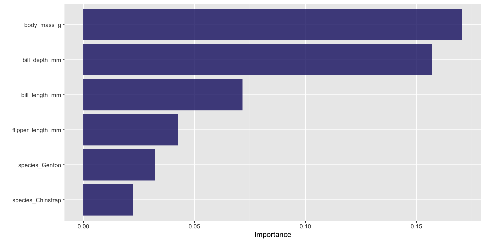

library(tidymodels) # for the parsnip package, along with the rest of tidymodels
# Helper packages
library(tidyverse) # for data manipulations
library(conflicted) # for helping with conflicts
library(skimr) # for nice data summaries
library(ranger) # needed for our random forests
library(gt) # for tables
library(usemodels) # for generating nice boilerplate code
library(vip) # for variable importance of random forest
conflicts_prefer(dplyr::filter)Modelling in R
Gabriel Mateus Bernardo Harrington ![]()
Objectives
- Look at the basics of modelling in R, focusing on the R package
tidymodelsand the “linear” class of models - Learn to build, interact with and visualise these models
- Learn how to qualitatively assess models
- Importantly, get used to the formula notation in R!
Question: what is a model?
Broad types of models
- Descriptive models
- Is there a trend in my data? Is it linear?
- Inferential models
- Hypothesis lead - does my therapy improve outcomes?
- Predictive models
- How many people will buy product X next month?
Modelling in R - An Overview
- Statistical models are complementary tools to visualisation
- Models help you to extract patterns out of data you input to it
- The overall goal of a model:
- Provide a simple, low-dimensional summary of a dataset
Setting Up!
tidymodelsdescribes itself thusly: “The tidymodels framework is a collection of packages for modelling and machine learning using tidyverse principles.”
Starting Simple
- Let’s start with our old friend,
mtcars
| Name | mtcars |
| Number of rows | 32 |
| Number of columns | 11 |
| _______________________ | |
| Column type frequency: | |
| numeric | 11 |
| ________________________ | |
| Group variables | None |
Variable type: numeric
| skim_variable | n_missing | complete_rate | mean | sd | p0 | p25 | p50 | p75 | p100 | hist |
|---|---|---|---|---|---|---|---|---|---|---|
| mpg | 0 | 1 | 20.09 | 6.03 | 10.40 | 15.43 | 19.20 | 22.80 | 33.90 | ▃▇▅▁▂ |
| cyl | 0 | 1 | 6.19 | 1.79 | 4.00 | 4.00 | 6.00 | 8.00 | 8.00 | ▆▁▃▁▇ |
| disp | 0 | 1 | 230.72 | 123.94 | 71.10 | 120.83 | 196.30 | 326.00 | 472.00 | ▇▃▃▃▂ |
| hp | 0 | 1 | 146.69 | 68.56 | 52.00 | 96.50 | 123.00 | 180.00 | 335.00 | ▇▇▆▃▁ |
| drat | 0 | 1 | 3.60 | 0.53 | 2.76 | 3.08 | 3.70 | 3.92 | 4.93 | ▇▃▇▅▁ |
| wt | 0 | 1 | 3.22 | 0.98 | 1.51 | 2.58 | 3.33 | 3.61 | 5.42 | ▃▃▇▁▂ |
| qsec | 0 | 1 | 17.85 | 1.79 | 14.50 | 16.89 | 17.71 | 18.90 | 22.90 | ▃▇▇▂▁ |
| vs | 0 | 1 | 0.44 | 0.50 | 0.00 | 0.00 | 0.00 | 1.00 | 1.00 | ▇▁▁▁▆ |
| am | 0 | 1 | 0.41 | 0.50 | 0.00 | 0.00 | 0.00 | 1.00 | 1.00 | ▇▁▁▁▆ |
| gear | 0 | 1 | 3.69 | 0.74 | 3.00 | 3.00 | 4.00 | 4.00 | 5.00 | ▇▁▆▁▂ |
| carb | 0 | 1 | 2.81 | 1.62 | 1.00 | 2.00 | 2.00 | 4.00 | 8.00 | ▇▂▅▁▁ |
Plot data
- Plotting our data is always a good first step
- Do you see an obvious trend?
Models - line of best fit
- You’ve seen how we can add a line to the data before, but what does it mean?
Establishing a Model
- Selection: Defining a family of models
- A precise, but generic, pattern that you want to capture within your data (such as a straight line or a quadratic curve
- Express the model family as an equation for a line/curve, such as:
- \(Y = a_1 + a_2 \times X\)
- \(X\) and \(Y\) are known variables from your data
- \(a_1\) and \(a_2\) are parameters that can vary depending on the pattern that is captured
- Fitting: Generate a fitted model (model fit)
- Find the model from the family you’ve chosen that is closes to your data
- Then, taking the generic model and making it specific to your data, like:
- \(Y = 7 + 2 \times X\)
Visualising Model Fitness
Fitness of Models
- A good statistical model is expected to be close to the data
- To calculate the fitness of a model, we quantify the distance between data and the model to produce a score
- We repeatedly trail \(a_1\) and \(a_2\) to find the model with the smallest distance
- We can therefore define the fitness of the model as the sum of all vertical distances to each data point from the model we’ve picked
- The distance between these is equivalent to the difference between the \(Y\) value given by the model (the prediction) and the \(Y\) value in the data (the response)
Linear models and lm()
- Alternatively, we can use a broader family of models called linear models
- A linear model has the general form:
- \(y = a_1 + a_2 \times x_1 + a_3 \times x_2 + ... + an \times x_{(n-1)}\)
- The previous simple model is equivalent to a general linear model where \(n = 2\) and \(x_1 = x\)
- Function for fitting a linear model:
lm() lm()comes with a special syntax to specify the model family: formula- Formulas look like
y ~ xwhich translate to a function like \(y = a_1 + a_2 \times x\)
An example with the Palmer penguins dataset
- Observations of Antarctic penguins who live on the Palmer Archipelago
- Let’s have a quick look at the data
- It looks like there’s a slight negative correlation between bill length and depth right…?
Think carefully about your data!
- We have 3 different species in this data, what happens if we check those?
- A nice example of Simpson’s paradox

Building a model with tidymodels
- Let’s say we want to try and predict the sex of a penguin based on it’s physical characteristics
How do we know how good our model is?
Splitting our data
- We want to split our data into testing and training datasets prior to modelling
- NOTE that our testing data is precious! We don’t want to squander it and so should only let our final model see it once at the very end
- But many models require hyperparameter tuning, and what if we want to compare the performance of different models?
set.seed(123) # set seed to make sure our results don't change!
# split data making sure we have sex balanced groups
penguin_split <- initial_split(penguins_df, strata = sex)
penguin_train <- training(penguin_split)
penguin_test <- testing(penguin_split)
penguin_split<Training/Testing/Total>
<249/84/333>Internal resamping
- The prior step gave us our training and final testing set, but we want to compare models so we’ll need some internal testing within the training set
- There are several approaches but two common ones are:
- Cross-fold validation - split the data several times (typically 10) and run the model against those splits
- Bootstrap validation - resample with replacement, so the same sample can appear multiple times in the training set of each iteration (this approach can be better when you’ve smaller datasets)
Comparing two modelling appraoches
- Let’s compare a logistic regression model and a random forest model
- In tidymodels we specify the type of model we want and the computational engine to be used
- In the case of random forest we also have to specify that’s we want a classification model since random forest can model both continuous and categorical outcomes
Aside - hyperparameter tuning
- Model hyperparameters are model variables we can set for some modelling approaches that can be very important for how that model performs
- It can also be difficult to know what values to use for some of these and so we might want to iterate over several values to see which performs the best
ranger_recipe <-
recipe(formula = sex ~ ., data = penguin_train)
ranger_spec <-
rand_forest(mtry = tune(), min_n = tune(), trees = 1000) %>%
set_mode("classification") %>%
set_engine("ranger")
ranger_workflow <-
workflow() %>%
add_recipe(ranger_recipe) %>%
add_model(ranger_spec)
set.seed(12151)
ranger_tune <-
tune_grid(ranger_workflow, resamples = stop("add your rsample object"), grid = stop("add number of candidate points"))Testing hyperparameters
ranger_recipe <-
recipe(formula = sex ~ .,
data = penguin_train) |>
# impute the mean if any values are missing
step_impute_mean(all_numeric_predictors()) |>
# apply hot-one encoding to factors
step_dummy(all_nominal_predictors()) |>
# remove any predictors that have 0 variance
step_nzv(all_numeric_predictors())
ranger_spec <-
rand_forest(mtry = tune(),
min_n = tune(),
trees = 1000) %>%
set_mode("classification") %>%
set_engine("ranger")
ranger_workflow <-
workflow() %>%
add_recipe(ranger_recipe) %>%
add_model(ranger_spec)
set.seed(70081)
doParallel::registerDoParallel()
ranger_tune <-
tune_grid(ranger_workflow,
resamples = penguin_boot,
grid = 10)Visualising different hyperparameters
# A tibble: 5 × 8
mtry min_n .metric .estimator mean n std_err .config
<int> <int> <chr> <chr> <dbl> <int> <dbl> <chr>
1 2 6 accuracy binary 0.918 25 0.00534 Preprocessor1_Model08
2 1 3 accuracy binary 0.917 25 0.00568 Preprocessor1_Model04
3 2 13 accuracy binary 0.915 25 0.00566 Preprocessor1_Model05
4 3 38 accuracy binary 0.905 25 0.00566 Preprocessor1_Model06
5 3 30 accuracy binary 0.904 25 0.00520 Preprocessor1_Model01# A tibble: 5 × 8
mtry min_n .metric .estimator mean n std_err .config
<int> <int> <chr> <chr> <dbl> <int> <dbl> <chr>
1 2 6 roc_auc binary 0.979 25 0.00194 Preprocessor1_Model08
2 1 3 roc_auc binary 0.978 25 0.00204 Preprocessor1_Model04
3 2 13 roc_auc binary 0.977 25 0.00206 Preprocessor1_Model05
4 3 30 roc_auc binary 0.971 25 0.00230 Preprocessor1_Model01
5 4 19 roc_auc binary 0.971 25 0.00243 Preprocessor1_Model07
Finalise our random forest workflow
- We can easily just take the best parameters from our best using
select_best, though note that what you might want to optimise your model for may depend on your goal!
══ Workflow ════════════════════════════════════════════════════════════════════
Preprocessor: Recipe
Model: rand_forest()
── Preprocessor ────────────────────────────────────────────────────────────────
3 Recipe Steps
• step_impute_mean()
• step_dummy()
• step_nzv()
── Model ───────────────────────────────────────────────────────────────────────
Random Forest Model Specification (classification)
Main Arguments:
mtry = 2
trees = 1000
min_n = 6
Computational engine: ranger Model formula and pre-processing with recipes
- There are many processing steps we might want to perform on our data when modelling it, so
tidymodelsprovides a framework for this - This gives us lots of function for imputing missing data, scaling and centring and much more
# Set sex as the outcome and use all other
# variables as predictors with the "." shorthand
recipe <- recipe(sex ~ .,
data = penguin_train) |>
# impute the mean if any values are missing
step_impute_mean(all_numeric_predictors()) |>
# apply hot-one encoding to factors
step_dummy(all_nominal_predictors()) |>
# remove any predictors that have 0 variance
step_nzv(all_numeric_predictors())
# Add this to a workflow
penguin_wf <- workflow() |>
add_recipe(recipe)
penguin_wf══ Workflow ════════════════════════════════════════════════════════════════════
Preprocessor: Recipe
Model: None
── Preprocessor ────────────────────────────────────────────────────────────────
3 Recipe Steps
• step_impute_mean()
• step_dummy()
• step_nzv()Aside - formula options - interactions
- We often might be interested in interactions between variables, so we can use the
*to assess this in the formula
# A tibble: 4 × 5
term estimate std.error statistic p.value
<chr> <dbl> <dbl> <dbl> <dbl>
1 (Intercept) -25718. 2696. -9.54 3.37e-19
2 bill_length_mm 719. 59.3 12.1 3.03e-28
3 bill_depth_mm 1493. 151. 9.90 2.19e-20
4 bill_length_mm:bill_depth_mm -36.3 3.33 -10.9 7.28e-24Aside - formula options - multilevel modelling
- There are multilevel modelling approaches that allow us to set random effects for variables using a
|syntax - This in package dependant though, so we need to add the formula in a engine specific way
library(multilevelmod)
multilevel_spec <- linear_reg() |>
set_engine("lmer")
multilevel_workflow <-
workflow() |>
# Pass the data along as-is:
add_variables(outcome = body_mass_g,
predictors = c(species,
bill_depth_mm, sex)) |>
add_model(multilevel_spec,
# This formula is given to the model
formula = body_mass_g ~ sex + (bill_depth_mm | species))
multilevel_fit <- fit(multilevel_workflow, data = penguins_df)
multilevel_fit══ Workflow [trained] ══════════════════════════════════════════════════════════
Preprocessor: Variables
Model: linear_reg()
── Preprocessor ────────────────────────────────────────────────────────────────
Outcomes: body_mass_g
Predictors: c(species, bill_depth_mm, sex)
── Model ───────────────────────────────────────────────────────────────────────
Linear mixed model fit by REML ['lmerMod']
Formula: body_mass_g ~ sex + (bill_depth_mm | species)
Data: data
REML criterion at convergence: 4748.67
Random effects:
Groups Name Std.Dev. Corr
species (Intercept) 405.4
bill_depth_mm 115.5 -0.57
Residual 301.5
Number of obs: 333, groups: species, 3
Fixed Effects:
(Intercept) sexmale
2469.9 510.4 Checking our recipe
- Might be wise to make sure our recipe is doing what we think it is!
Running our logistic regression model
# Resampling results
# Bootstrap sampling
# A tibble: 25 × 5
splits id .metrics .notes .predictions
<list> <chr> <list> <list> <list>
1 <split [249/93]> Bootstrap01 <tibble [3 × 4]> <tibble [0 × 3]> <tibble>
2 <split [249/91]> Bootstrap02 <tibble [3 × 4]> <tibble [0 × 3]> <tibble>
3 <split [249/90]> Bootstrap03 <tibble [3 × 4]> <tibble [0 × 3]> <tibble>
4 <split [249/91]> Bootstrap04 <tibble [3 × 4]> <tibble [0 × 3]> <tibble>
5 <split [249/85]> Bootstrap05 <tibble [3 × 4]> <tibble [1 × 3]> <tibble>
6 <split [249/87]> Bootstrap06 <tibble [3 × 4]> <tibble [0 × 3]> <tibble>
7 <split [249/94]> Bootstrap07 <tibble [3 × 4]> <tibble [0 × 3]> <tibble>
8 <split [249/88]> Bootstrap08 <tibble [3 × 4]> <tibble [1 × 3]> <tibble>
9 <split [249/95]> Bootstrap09 <tibble [3 × 4]> <tibble [0 × 3]> <tibble>
10 <split [249/89]> Bootstrap10 <tibble [3 × 4]> <tibble [0 × 3]> <tibble>
# ℹ 15 more rows
There were issues with some computations:
- Warning(s) x3: glm.fit: fitted probabilities numerically 0 or 1 occurred
Run `show_notes(.Last.tune.result)` for more information.Running our random forest model
# Resampling results
# Bootstrap sampling
# A tibble: 25 × 5
splits id .metrics .notes .predictions
<list> <chr> <list> <list> <list>
1 <split [249/93]> Bootstrap01 <tibble [3 × 4]> <tibble [0 × 3]> <tibble>
2 <split [249/91]> Bootstrap02 <tibble [3 × 4]> <tibble [0 × 3]> <tibble>
3 <split [249/90]> Bootstrap03 <tibble [3 × 4]> <tibble [0 × 3]> <tibble>
4 <split [249/91]> Bootstrap04 <tibble [3 × 4]> <tibble [0 × 3]> <tibble>
5 <split [249/85]> Bootstrap05 <tibble [3 × 4]> <tibble [0 × 3]> <tibble>
6 <split [249/87]> Bootstrap06 <tibble [3 × 4]> <tibble [0 × 3]> <tibble>
7 <split [249/94]> Bootstrap07 <tibble [3 × 4]> <tibble [0 × 3]> <tibble>
8 <split [249/88]> Bootstrap08 <tibble [3 × 4]> <tibble [0 × 3]> <tibble>
9 <split [249/95]> Bootstrap09 <tibble [3 × 4]> <tibble [0 × 3]> <tibble>
10 <split [249/89]> Bootstrap10 <tibble [3 × 4]> <tibble [0 × 3]> <tibble>
# ℹ 15 more rowsEvaluating our models
- Which performed better?
| .metric | .estimator | mean | n | std_err | .config |
|---|---|---|---|---|---|
| accuracy | binary | 0.918 | 25 | 0.006 | Preprocessor1_Model1 |
| brier_class | binary | 0.059 | 25 | 0.004 | Preprocessor1_Model1 |
| roc_auc | binary | 0.979 | 25 | 0.003 | Preprocessor1_Model1 |
| .metric | .estimator | mean | n | std_err | .config |
|---|---|---|---|---|---|
| accuracy | binary | 0.918 | 25 | 0.006 | Preprocessor1_Model1 |
| brier_class | binary | 0.065 | 25 | 0.002 | Preprocessor1_Model1 |
| roc_auc | binary | 0.978 | 25 | 0.002 | Preprocessor1_Model1 |
Random forest variable importance

Confusion matrix
- A confusion matrix tells us how many time our model predicts a correct category
ROC curve
Using our precious testing data
- Having decided on our best model we can finally use our testing set to evaluate our performance using all of our training data
# Resampling results
# Manual resampling
# A tibble: 1 × 6
splits id .metrics .notes .predictions .workflow
<list> <chr> <list> <list> <list> <list>
1 <split [249/84]> train/test split <tibble> <tibble> <tibble> <workflow>Final model performance
# A tibble: 3 × 4
.metric .estimator .estimate .config
<chr> <chr> <dbl> <chr>
1 accuracy binary 0.857 Preprocessor1_Model1
2 roc_auc binary 0.938 Preprocessor1_Model1
3 brier_class binary 0.101 Preprocessor1_Model1 Truth
Prediction female male
female 37 7
male 5 35Odds ratios
- We can check our coefficients to see what variables are predictive of sex
# A tibble: 7 × 5
term estimate std.error statistic p.value
<chr> <dbl> <dbl> <dbl> <dbl>
1 (Intercept) 5.75e-46 19.6 -5.31 0.000000110
2 species_Gentoo 1.14e- 5 3.75 -3.03 0.00243
3 species_Chinstrap 1.37e- 4 2.34 -3.79 0.000148
4 body_mass_g 1.01e+ 0 0.00176 4.59 0.00000442
5 flipper_length_mm 1.06e+ 0 0.0611 0.926 0.355
6 bill_length_mm 1.91e+ 0 0.180 3.60 0.000321
7 bill_depth_mm 8.36e+ 0 0.478 4.45 0.00000868 Final plot
- Having learnt that bill depth is our strongest predictor by far (an increase of 1mm for bill depth corresponds to an over 8x higher odds of being male!), we can plot this variable to see how well is segregates
Links and Resources
- A great book on modelling with R that focuses on using tidymodels: https://www.tmwr.org/
- A nice YouTube channel with lots of modelling examples: https://www.youtube.com/@JuliaSilge/featured
Workshop time!
- These slides and the workshop can be found on the website here:

MET581 - Modelling in R